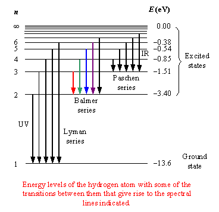
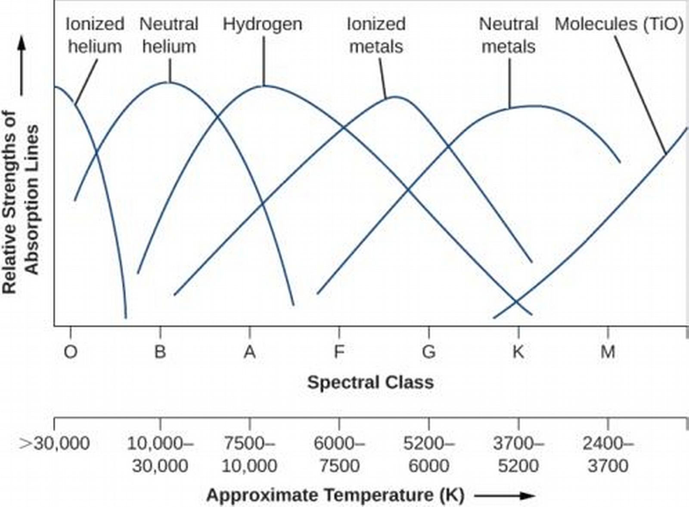
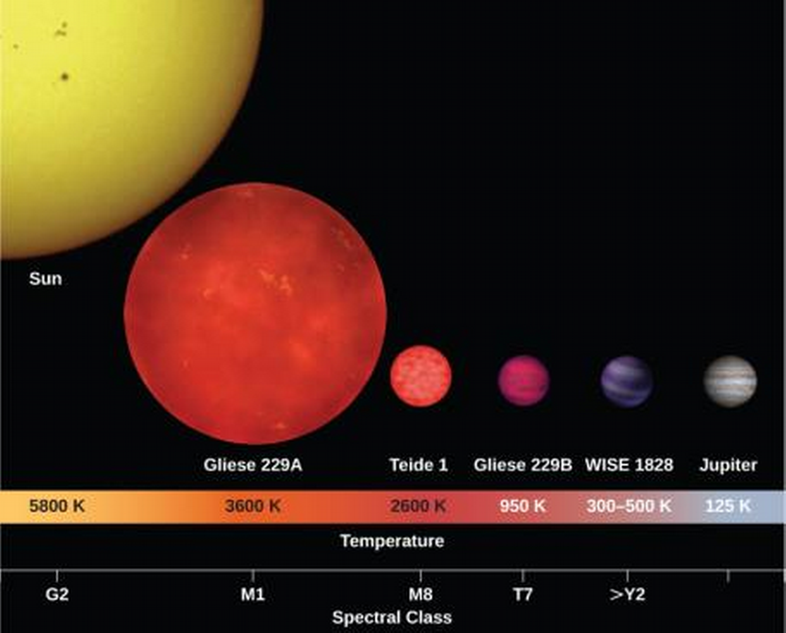
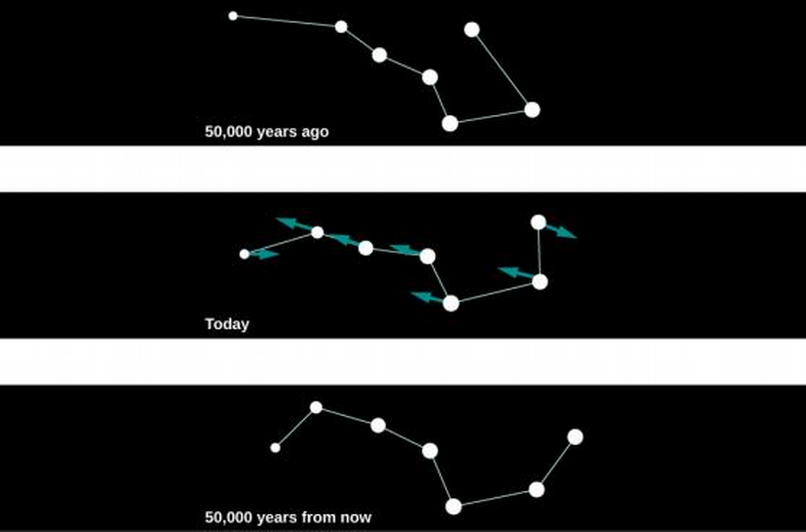
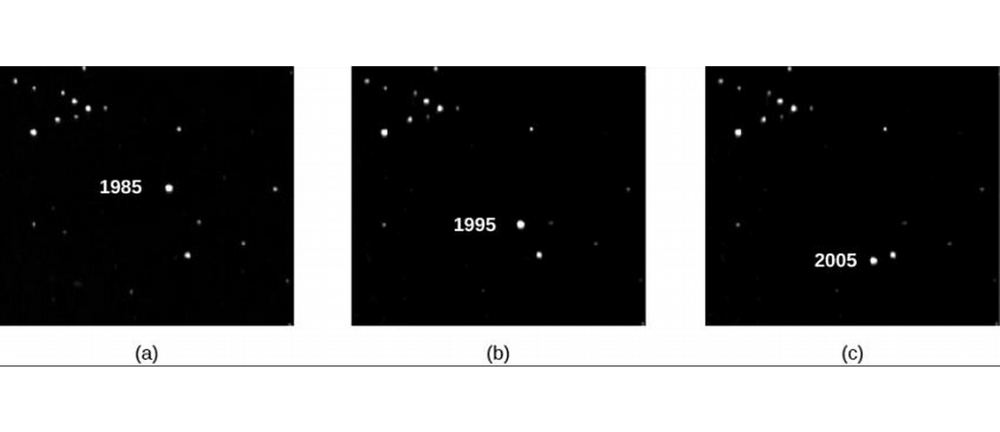
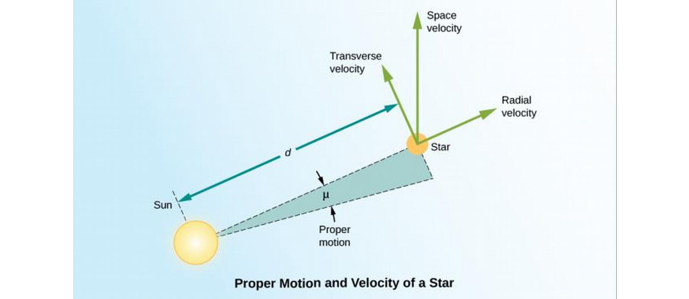
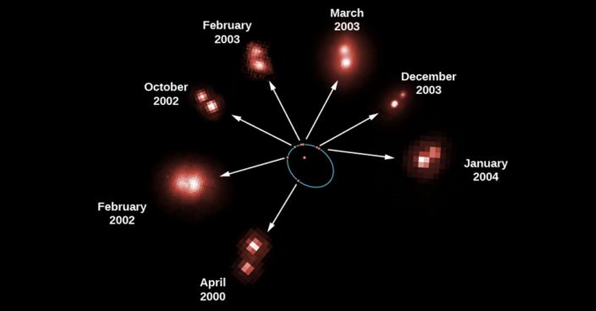
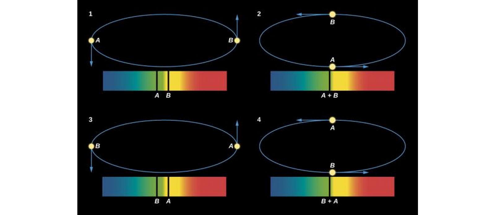
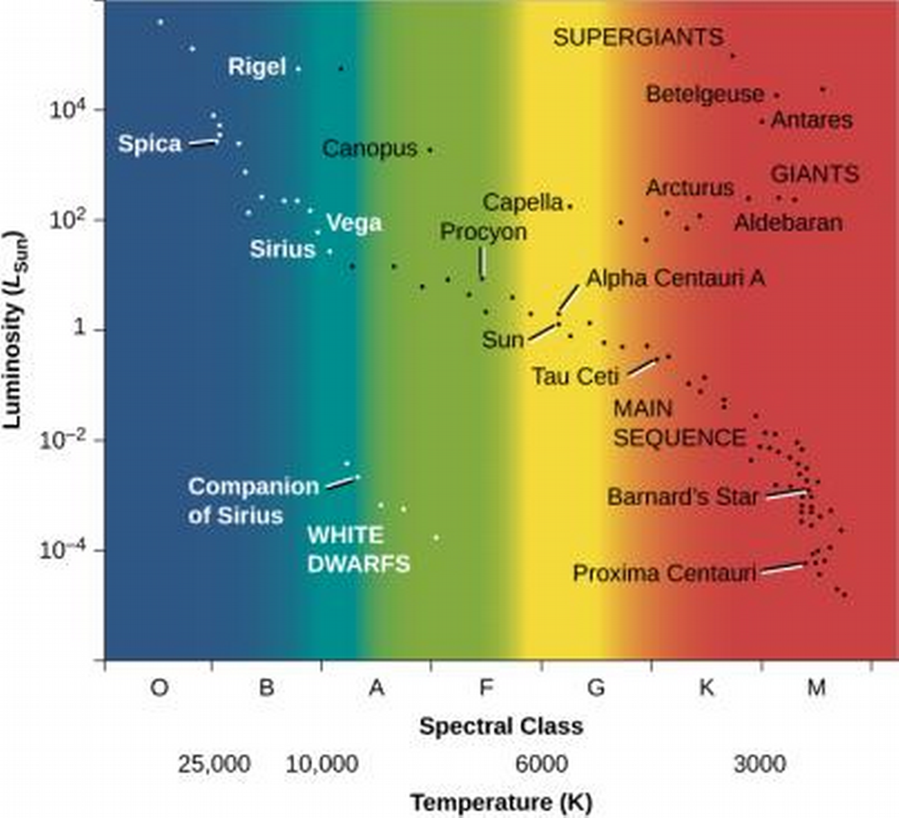
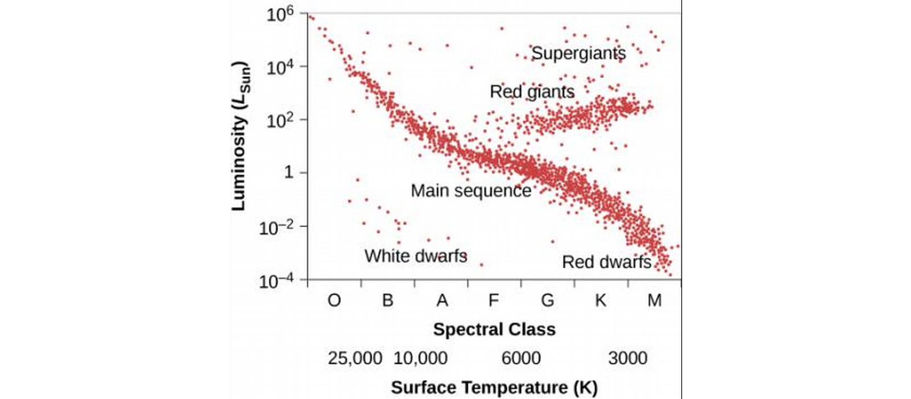

ASTR101 Ch 17-18
Ch 17 - Analyzing Starlight
The Brightness of Stars
Luminosity and Apparent Brightness
- Recall that luminosity is the total energy, at all wavelengths, emitted by a star per second.
- Flux is the luminosity per unit area. Stars emit the same amount of energy in all directions (isotropy).
- The Apparent brightness measures, for a given area, the amount of incident energy.
- To make comparisons easier, we use units of Lo or LSun, the Sun's luminosity.
- If stars were the same brightness, we could find how far away they are based on their apparent brightness. (How does energy scale with distance?)
The Magnitude Scale
- Photometry is the process of measuring apparent brightness of stars.
- Recall Hipparchus' magnitude scale, with 1st magnitude brightest and 6th magnitude dimmest.
- This is now quantized such that a difference in scale magnitude of 5 corresponds to a factor of 100 difference in brightness.
- We even have negative stars for stars brighter than 1st magnitude, and fractional magnitudes (eg, 2.4). Eg, Venus has magnitude -4.4, the Sun -26.8.
- If a star is one magnitude higher than another star, how many times brighter is it?
- \[m_1-m_2=2.5 log(b_2/b_1)\]

Other Units of Brightness
- A more robust measurement than magnitudes, which are convenient, is SI units (Watts for luminosity, Watts/m2 for flux).
Colors of Stars

Figure 2: Hubble image of stars in direction of Milky Way center.
Color and Temperature
- Unlike brightness, color doesn't change if you're farther away, so the colors we observe represent roughly the colors of stars.
- Recall that the peak wavelength is related to the temperature of a star through Wien's law;
\[\lambda_{max}=\frac{3\times10^6 nm\cdot{}K}{T}.\]
- Blue corresponds to a surface temperature of approximately 25,000 K, white 10,000 K, yellow 6000 K, orange 4000 K, red 3000 K.
Color Indices
- A filter is like stained glass; it only allows its own color to pass (filters can also be devised for non-visible light).
- To quantitatively measure color, we take three measurements through the common filters, UBV: ultraviolet, blue, and yellow (v stands for "visual"); around 360 nm, 420 nm, and 540 nm respectively.
- If you subtract any two of these measurements, you get the color index of that measurement. Eg, a bluer star would have a negative B-V color index (magnitude of blue minus magnitude of red).
- These are normalized so that Vega (T=10,000 K) has a color index of 0.
- Color index is calculable from temperature and vice versa, using Wien's law.

The Spectra of Stars (and Brown Dwarfs)
Formation of Stellar Spectra
- Spectra from different stars are different. So they're made of different material, right?
- Wrong! Turns out they're nearly the same as the Sun. The temperature, it turns out, is the cause of the different spectra.
- Are we talking about absorption or emission spectra?
- But we understood spectra to reflect the material, and not the temperature—what gives?
- The material actually changes; eg., hydrogen fully ionizes (the electron leaves the atom), and the spectrum corresponding to ionized hydrogen is different from hydrogen's.

- Another issue is that cooler stars have unionized hydrogen at the lowest (n=1) energy level (Lyman series), meaning they absorb and emit in the ultraviolet wavelengths, which are not prevalent in cooler stars.
- A hotter star of 10,000 K produces the most visible hydrogen lines, since many electrons at this temperature are in the n=2 before getting excited by a photon.
Classification of Stellar Spectra
- Stars are sorted into spectral classes according to their spectral patterns.
- The seven spectral class, from hottest to coldest, are O, B, A, F, G, K, and M, with recent colder additions L, T, and Y.
- Why the letters? History (sorry). Used to be A-O, based on hydrogen spectrum, but as discussed these are weak and sometimes not in the visible regime, and here we are.
- Actual suggested textbook mnemonic: "Oh, Be A Fine Girl/Guy, Kiss Me Like That, Yo!".
- Each class is subdivided 0-9 (eg, B0 is hotter than B9). The Sun is G2.
- Astronomers refer elements heavier than helium metals, for no good reason (they are not metals).
- What spectral patterns are observed for different temperatures?

- See Table 17.2 for more details on classification.

Spectral Classes L, T, and Y
- Why did we recently add L, T, and Y?
- Astronomers began to discover objects even cooler than M9 in 1988.
- A star is defined by the fusion that occurs in its hydrogen nuclei into protons, releasing energy.
- They need to be greater than about 7.5% of the Solar mass (.075 So) for this to happen.
- "Failed stars" that don't quite reach this threshhold are termed brown dwarfs.
- Brown dwarfs emit mostly IR and are cool and hard to detect; 2200 have been discovered since 1988.
- Brown dwarfs are so close to M-type in spectrum that spectrum alone doesn't distinguish them.

Figure 7: Some brown dwarves in relation to Sun and Jupiter.
Low-Mass Brown Dwarfs vs. High-Mass Planets
- They are difficult to distinguish!
- Brown dwarfs, regardless of their mass (which ranges 13-80 MJ), are close in radius to Jupiter.
- Deuterium fusion distinguishes brown dwarfs from high-mass planets;
- While brown dwarfs can't perform proton-proton (hydrogen fusion), they can sustain deuterium fusion.
Using Spectra to Measure the Stellar Radius, Composition, and Motion
Clues to the Size of a Star
- The biggest stars are called giants.
- Spectral lines of giants are narrower due to the lower density of the atoms (less broadening from collisions).
Abundances of the Elements
- We can approximate the ratio of elements by the intensity of their spectral signatures.
- Metallicity describes the fraction of a star's mass composed of metals (as defined in Astronomy, not actual metals).
- Recall that metals in Astronomy refer to elements heavier than helium (for no good reason).
Radial Velocity
- If a star moves away from us, all of its spectral lines are red-shifted through the doppler effect (same with blue shift if it moves towards us).

Proper Motion
- Proper motion is motion that is transverse (side-to-side, as we see it).
- Of course, too slow to notice just by staring.

Figure 10: Barnard's Star exhibits the largest known proper motion.
- Then to know the full velocity (space velocity) of a star, we need to know its radial velocity, proper motion, and distance.
- Why distance?

Rotation
- Recall we can observe doppler broadening to see how fast the star is rotating.

- Many stars rotate faster than the Sun, which has a rotation period of 24-30 days.
- Their rotation can change their shape.
- Stars decrease their rotational speed as they age.
Ch 18 - The Stars: A Celestial Census
Binaries
Visual Binaries
- We can find the mass of stars in visual binaries, in which both stars can be seen, by analyzing their motion.


Spectroscopic Binaries
- We don't have this advantage in spectroscopic binaries, which are only clearly shown to be binaries through spectroscopic measurements!
- We observe the radial velocity through the periodic doppler shift.


Eclipsing Binary stars
- In cases of eclipsing binary stars (as in the homework), we can find the star diameters and relative velocities, from which the masses can be found!
- We can further use Newton's reformulation of Kepler's third law,
\[ D^3=(M_1+M_2)P^2. \]


Measuring Stars
-Table 18.2 summarizes how to measure various characteristics:
| Characteristic | Technique |
|---|---|
| Surface Temperature | 1. Color (rough) |
| 2. Measure spectrum and get spectral type. | |
| Chemical Composition | Spectral analysis |
| Luminosity | Measure apparent brightness and compensate for distance. |
| Radial velocity | Measure Doppler shift. |
| Rotation | Measure Doppler broadening. |
| Mass | Measure Period and radial velocity curves of binaries. |
| Diameter | 1. Measure how a star is blocked. |
| 2. Measure light curves and Doppler shifts of eclipsing binaries. |
H-R Diagrams
- Plotting Luminosity v. Mass for various stars supports the relationship, L~M3.9.

The H-R diagram
- Hertzsprung-Russell diagram, shows stars in Luminosity v. Spectral class.
- There is a main sequence of stars where luminosity and temperature are related.
- Top right stars are cool and luminous—how? Must be gigantic!
- Bottom left have high temperature, low luminosity, they must have a very small total surface area. These are called white dwarfs.

- Keep in mind, we can only plot stars we know the distances to, resulting in observation bias, so the plot doesn't accurately portray relative abundance.
- We estimate from various surveys that outside of brown dwarfs, 90% of stars are along the main sequence, 10% white dwarfs, and less than 1% giants and supergiants.
